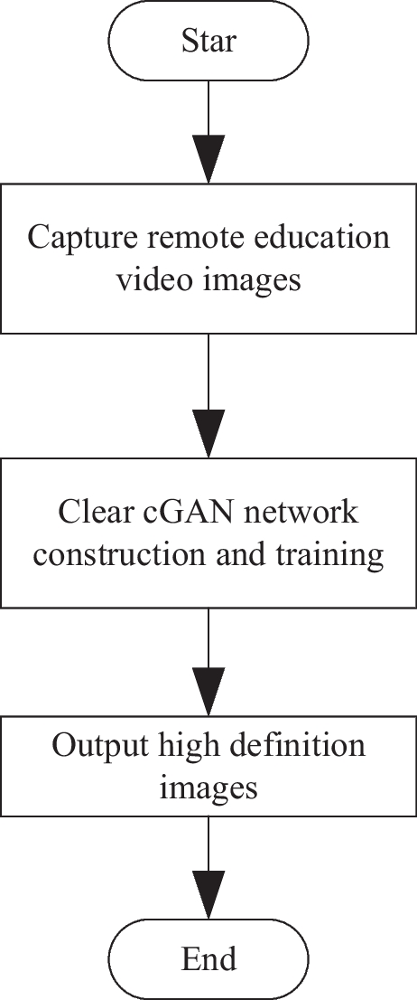
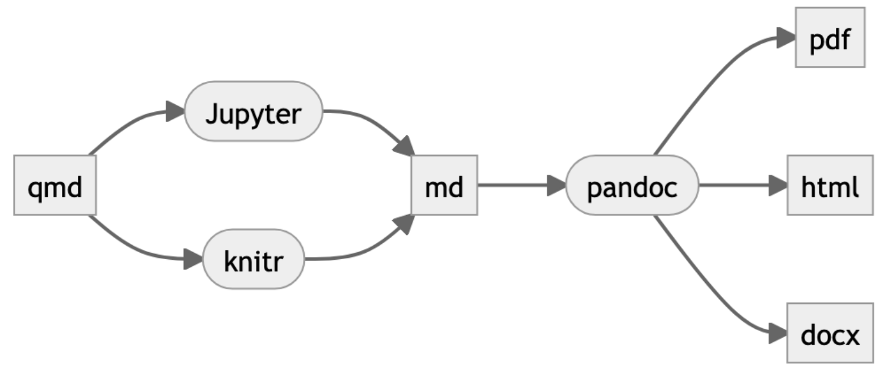
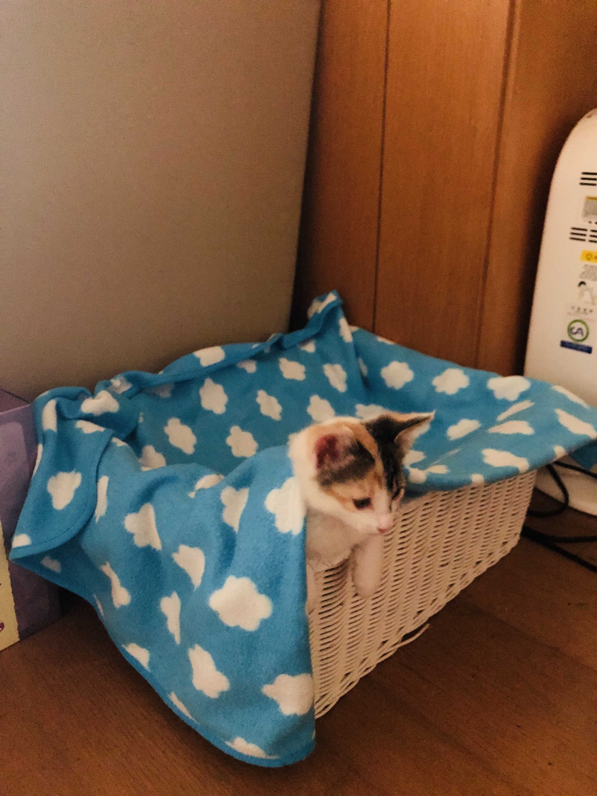
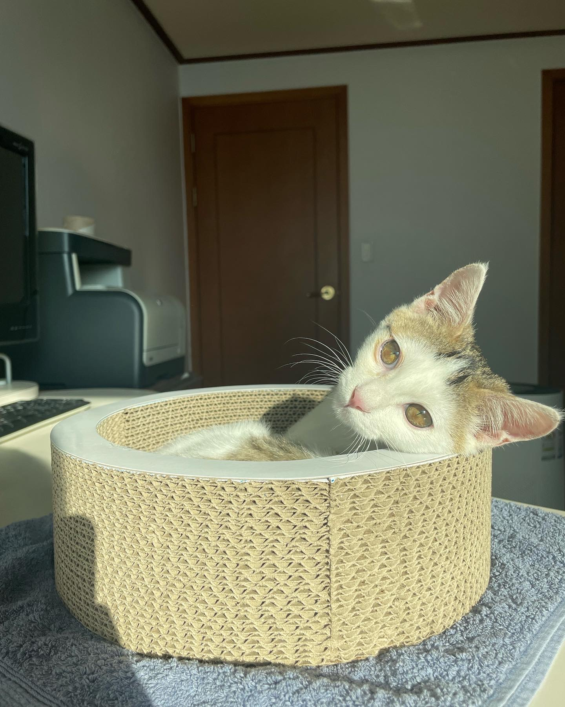

graph TD;
A(Star) --> B[ Capture remote education <br> video images]
B --> C[Clear cGAN network <br> construction and training]
C --> D[Output high definition <br> images]
D --> E(End)
simple_quarto_website
Demo Review
Characterization of human fetal spinal cord stem cell line(Guo et al. 2010)
Application of microphysiological systems to enhance safety assessment in drug discovery(Ewart et al. 2018)
To learn more about Quarto websites visit https://quarto.org/docs/websites.
Component 4
Face Recognition of Remote Teaching Video Image Based on Improved Frame Difference Method (Wang, Moqurrab, and Yoo 2023)
Face recognition technology1 is a vital biometric recognition technology widely employed in computer vision2 3. The human face, being a unique and complex visual biological feature, encapsulates a wealth of information. While facial expressions, age, and hairstyles may vary significantly, the human face exhibits a certain level of invariance and individuality, enabling it to serve as a means of identification. However, designing a fully automated face recognition system that can reliably perform under all circumstances remains a significant challenge. The use of biometric identity authentication, leveraging the intrinsic attributes of humans such as uniqueness, stability, and strong security, has become a popular method of verifying one’s identity. In recent years, considerable research has been conducted on face recognition technology based on human facial features. This technology offers the advantage of collecting facial data at a distance without the subject’s cooperation, thus bypassing the need for active involvement.
Face recognition research is a multidisciplinary field that encompasses pattern recognition, image processing, computer vision, physiology, psychology, and cognitive science. It is closely linked to other biometric identification methods and the interaction between humans and computers.
Distance e-learning is a prominent research focus in the education field. Within remote network teaching, the integration of face recognition technology can assist teachers in monitoring attendance and class dynamics, providing comprehensive insights into the learning process of students. Additionally, through data analysis provided by the face recognition system, teachers can promptly adapt and optimize their teaching progress. Therefore, the application of face recognition technology in remote network teaching holds significant implications for relevant colleges and universities. It is essential for professionals in the field to further enhance research on face recognition technology, grasp its functionalities and technical aspects, and analyze its compatibility with distance teaching requirements to enable effective implementation in educational institutions.
Mermaid Diagram Created
Image of the Diagram

In the process of establishing the single Gaussian model, the brightness value of each pixel in the background image is consistent with the Gaussian distribution, so the single Gaussian model can be established for each pixel value in the detection area. It is assumed that there are M frames images within time t, the brightness of each pixel in the region obeys the Gaussian distribution of mean β and standard deviation ε, and the Gaussian distribution of each pixel is independent of each other. The brightness value of each pixel in a continuous video image is regarded as a random process changing with time, which is sharpening processing images, the sequence of pixel (X,Y) brightness value is expressed as: \[{X_1, X_2, ..., X_M} = {J(X, Y, j),|1 \leq j \leq M}\]
where, J(X, Y, j) represents the continuous image sequence in the remote teaching video after sharpening processing, and represents the brightness value of the pixe (X, Y) l in the jth frame.
The set of pixel (X,Y) satisfies the Gaussian distribution within M frames: \[ Q(X_j) = \frac{1}{\sqrt{2\pi\epsilon_j}}e^{-f+\beta/2\epsilon_j} \]
Among them, \(Q(X_j)\) is the Gaussian distribution of features. The mean \(\beta_j\) and standard devaition \(\epsilon_j\) of the set of pixel \((X,Y)\) within M frames are \(\beta_j=\frac{1}{M}\Sigma_{j=0}^{M-1}f_j\), \(\epsilon_j=\frac{1}{M}\Sigma_{j=0}^{M-1}f_j-\beta_j\), where, \(f_j\) represents the grey value of any pixel \((X,Y)\) in the jth frame.The table below shows the accuracy test results of face feature extraction by the proposed algorithm, \(X_1\) is the length of the face. As shown in the table, the matching degree of the face features of the remote teaching video image detected by the proposed algorithm is 0.98, which has a high matching degree, and the extraction effect is ideal.
| Indicator type | Numerical value |
|---|---|
| \(X_1/cm\) | 10 |
| \(X_2/cm\) | 0.1 |
| \(X_3/cm\) | 0.1 |
| \(\Omega\)/% | 0.98 |
Check the website for more mathematical symbols.
Going over Quarto: Mermaid Diagrams
What is Mermaid?
Mermaid is a flowchart and diagram visualization tool based on JavaScript and uses syntax inspired by Markdown in order to create and dynamically modify flowcharts.
The following sections describe the ways to in which you can control the color theme of Mermaid diagrams:
- Using the current document theme
- Using Quarto’s bootswatch built-in themes:
- Darkly
- Sandstone
- Vapor
- Using one of Mermaid own color themes via a YAML option.
- default
- dark
- forest
- neutral
- Using SCSS and CSS variables
Example of a Mermaid Diagram with Quarto’s bult-in themes: Neutral
- Using one of Mermaid own color themes via a YAML option.
- default
- dark
- forest
- neutral
%%{init: {'theme':'dark'}}%%
flowchart LR
A[qmd] --> B(Jupyter)
A --> B(knitr)
B --> C[md]
C --> D(pandoc)
D --> E[pdf]
D --> E[html]
D --> E[docx]

flowchart LR
A[qmd] --> B(Jupyter)
A --> B(knitr)
B --> C[md]
C --> D(pandoc)
D --> E[pdf]
D --> E[html]
D --> E[docx]
Warning
Putting the mermaid diagram with neutral theme in the second panel tabset did not work, so I put an image of it and put the actual mermaid diagram instead, outside of the panel.
Also, check out how to make pie charts using Mermaid Diagram Tools!
4A little bit about ME!
Hello. This is Hannah Kim and am a graduate student in Georgetown University majoring in Masters of Science in Data Science and Analytics. I am interested in Statistics (I though I was interested), Computer Networks and Cloud computing. But overall, I love Data Science and Visualization. I think visual effects have an extremely big impact when it comes to presenting. So, though I am not sure with what I will do after two year, I hope to work in a company where visualizaiton takes a huge part. I graduated my undergrad in South Korea an area in Software Engineering. But because of the rigorous program, I was so intimidated by coding that I hesitated a lot before I come here to Georgetown. So I deferred my program a year and worked as a Technical Support Analyst at Medtronic for a year. It was fun working as a Technical Support Analyst because it involves a lot of communication and meeting new people. Outside of school, I love coffee and I love to go out, so I often go to coffee shops and stay there for the whole day. I have a twin sister living in Ottawa who lives with her boyfriend and she is my best friend in the world. I am a huge animal lover, especially cats. I have two cats in my hometown: Pepper, Button, and kept Cabbage for approximately two months. Checkout the videos to see how cute they are!5
My Cats
| Pepper | Button | Cabbage |
|---|---|---|

|
 |  |
|
|
|
References
Ewart, Lorna, Eva-Maria Dehne, Kristin Fabre, Susan Gibbs, James Hickman, Ellinor Hornberg, Magnus Ingelman-Sundberg, et al. 2018. “Application of Microphysiological Systems to Enhance Safety Assessment in Drug Discovery.” Annual Review of Pharmacology and Toxicology 58: 65–82.
Guo, Xiufang, Karl Johe, Peter Molnar, Hedvika Davis, and James Hickman. 2010. “Characterization of a Human Fetal Spinal Cord Stem Cell Line, NSI-566RSC, and Its Induction to Functional Motoneurons.” Journal of Tissue Engineering and Regenerative Medicine 4 (3): 181–93.
Wang, Can, Syed Atif Moqurrab, and Joon Yoo. 2023. “Face Recognition of Remote Teaching Video Image Based on Improved Frame Difference Method.” Mobile Networks and Applications, 1–12.
Footnotes
Xue S, Ren HP (2022) Single sample per person face recognition algorithm based on the robust prototype dictionary and robust variation dictionary construction. IET Image Proc 16(3):742–754↩︎
Liu S, Huang S, Fu W, Lin JCW (2022) A descriptive human visual cognitive strategy using graph neural network for facial expression recognition. Int J Mach Learn Cybernet.↩︎
Neha S, Khular SE, Amita K (2021) Hybrid meta-heuristic algorithm based Deep Neural Network for Face Recognition. J Comput Sci 30(11):14–15↩︎
https://www.youtube.com/watch?v=V3xi-7yvXSY↩︎
An introduction of myself↩︎